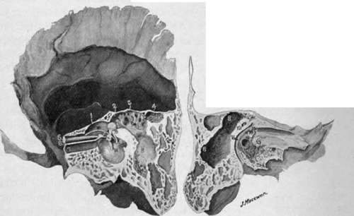
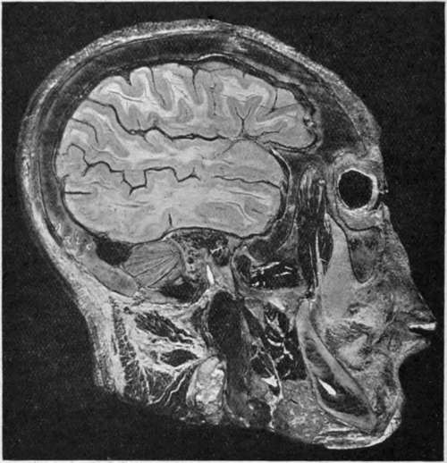

The Ear. Part 2
Description
This section is from the book "Surgical Anatomy", by John A. C. MacEwen. Also available from Amazon: Surgical Anatomy.
The Ear. Part 2
It is composed of fibrous tissue, and is lined externally with a very thin layer of skin, continuous with that of the meatus, while internally it is lined with mucous membrane, which is continuous with that lining the middle ear, and which is derived from that of the pharynx through the Eustachian tube. Λ little below its centre it presents a depression, or umbo, corresponding to the attachment of the handle of the malleus. As the chorda tympani nerve, with the vessels and nerves supplying the membrane, runs across above the level of the umbo, it is well when incising the membrane to do so below the umbo. The chorda tympani is a branch of the facial in the lower part of the aqueduct of Fallopius. It enters the middle ear through the iter chorda? posterius, leaves it through the iter chordae anterius, and then joins the lingual of the fifth beneath the external pterygoid muscle, whence it supplies the anterior two-thirds of the tongue with taste. It communicates in its course with the submaxillary and otic ganglia (see plate). The gap in the ring of bone to which the membrane is attached is situated above and anteriorly, and is called the notch of Rivini. From either extremity of this notch a fold of fibrous tissue extends to the short process of the malleus, and the angle so formed is filled in with loose connective tissue, known as Shrapnell's membrane, or the membrana flaccida. Pus may occasionally force its way through this membrane without rupturing the membrana tympani. The membrana tympani may be ruptured by blows on the ear, and even by loud noises, while it is frequently destroyed by middle-ear disease.
Fig. 5.-Temporal Bone.
1. | Tegmen tympani. | 10. | Chorda tympani. |
2. | Iter. | 11. | Tympanic membrane and handle of malleus. |
3· | Tegmen antri | 12. | Superior semicircular canal. |
4· | Accessory antrum. | 13· | Fenestra ovalis and stapes. |
5. | Tensor tympani. | 14 | Fenestra rotunda. |
6. | Processus cochleariformis. | 15 | Promontory with Jacobson's nerve ramifying over it. |
7. | Eustachian tube. | ||
8 | Mastoid antrum. | 16. | Facial canal. |
9· | Is placed on bone of the facial canal, which conceals the pyramid containing the stapedius muscle. To the left of the figure are the head of the malleus and long process of the incus. | ||
The middle ear, or tympanum, is a small cavity which contains the ossicles and communicates anteriorly with the pharynx through the Eustachian tube, and posteriorly with the mastoid antrum and cells through the iter. The lining membrane of all these parts, including the mastoid antrum and cells, is continuous with the pharyngeal mucous membrane. This membrane is very thin, and in the middle ear is thrown into folds which invest the ossicles, forming practically ligaments for them, and also numerous pouches, that between the membrana flaccida and neck of malleus being called the pouch of Prussak. The outer wall of the tympanum is formed by the tympanic membrane, and, above the membrane, by the squamous bone. The portion of the tympanum above the level of the membrana is called the attic, or epi-tympanic recess. It lodges the head of the malleus, and body and short process of the incus, the latter projecting into the iter (or aditus to the antrum), through which the attic of the tympanum communicates with the mastoid antrum. Thus the greater portion of the ossicles lies above the level of the tympanic membrane. The inner wall is formed by the external surface of the internal ear. At its upper and posterior part, close to the roof, is seen the projecting facial canal. Below this is the fenestra ovalis, occupied by the stapes. Still further down, but more anteriorly, is seen the promontory or projection of the cochlea, while yet further down and nearly under the fenestra ovalis is the fenestra rotunda.
Closed by a thin membrane and leading to the scala tympani. The roof, or tegmen tympani. situated above the upper limit of the tympanic membrane, is a very thin plate of bone, which separates the middle ear from the dura of the middle fossa. In the infant a gap exists in this roof externally, due to the petro-squamosal suture, which gives passage to some veins.
Fig. 6.-Sagittal head Section passing through the Tympanic Membrane and displaying the Middle Ear, Attic, Iter, and Mastoid Antrum.
The membrane is shown cut obliquely and exposing the middle ear, in which are seen the ossicles and the chorda tympani nerve (white). Helow and behind these the facial nerve (white) is seen in section.
Note how the middle ear and mastoid cells are surrounded by the condyle of the jaw in front, temporo-sphenoidal lobe above, ceiebellum behind, and sigmoid sinus below and behind. The jugular bulb and vein are shown in longitudinal sections (black), and the inferior dental nerve (white) in oblique section within the lower jaw.
And traces ot it may be found in the adult. Thus extension upward? of pyogenic mischief to the brain from the middle ear may very readily occur. The floor below the lower limit of the tympanic membrane and of the Eustachian tube is narrower than the roof and much thicker. It separates the middle ear from the dome of the internal jugular vein. The anterior extremity of the middle ear is tapered and is occupied above by the canal of the tensor tympani muscle and below by the Eustachian tube, separated from one another by the processus cochleariformis. This processus is prolonged backwards almost to the fenestra ovalis, where it forms a pulley for the tendon of the tensor tympani, which curves round it to be inserted into the neck of the malleus. Below the Eustachian tube is a thin plate of bone separating the middle ear from the carotid artery. The posterior wall presents superiorly the iter or communication with the mastoid antrum, which is generally of sufficient size to admit a director. Below the entrance to the iter is the pyramid, with a small aperture at its summit for the tendon of the stapedius muscle, while external to the pyramid and close to the tympanic membrane is the small aperture for the chorda tympani nerve. The tympanum is supplied by the tympanic branch of the internal maxillary artery, which enters through the Glaserian fissure, the stylo - mastoid branch of the posterior auricular, the petrosal branch of the middle meningeal, and small branches from the internal carotid. The veins run upwards to join the superior petrosal sinus, downwards to join the temporo-maxillary vein and jugular bulb, and backwards to the lateral sinus. The tympanic nerve plexus is formed by the small superficial petrosal (from otic ganglion to facial nerve), small deep petrosal (from sympathetic surrounding internal carotid artery), and tympanic branch of glosso-pharyngeal (Jacob-son's).
The Eustachian tube, about 1½ inches long, and lined with ciliated epithelium directing secretion toward the pharynx, commences at the anterior extremity of the middle ear, below and to the inside of the canal of the tensor tympani, and is directed forwards, inwards, and slightly downwards. For the first ½ inch of its course it is surrounded by an osseous wall, the internal carotid artery lying to its inside. It is narrowest at the junction of osseous and cartilaginous portions (isthmus), and then expands, presenting a trumpet-shaped mouth in the pharynx, situated above the soft palate behind the inferior turbinate bone. This mouth is generally closed, but is opened during swallowing by the action chiefly of the tensor palati. This fact is taken advantage of in Politzer's method of inflation, in which air is forced up the nostril through a nozzle, while the patient swallows a mouthful of water previously taken, the mouth and nostrils being kept firmly closed meanwhile. Probably, however, the Eustachian tubes are never firmly closed, as air can also be forced into them by attempting to blow through the nose while holding the nostrils ; this is known as Valsalva's method of inflation. These inflations are performed with a view to clearing the Eustachian tube, as when the tube is blocked partial deafness occurs. They are not entirely devoid of danger, as, if septic material be lodged in the tube, it may be forced up by inflation to the middle ear, and possibly even to the mastoid cells, as the Eustachian tube and the iter are in line with one another, the junction of the incus and stapes, however, intervening.
Continue to:
- prev: The Ear
- Table of Contents
- next: The Ear. Part 3